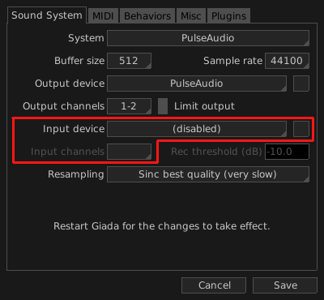

In this tutorial we will be using Giada as a plug-in host to process audio coming in from the sound card. This is useful when you want to apply some effects to an instrument or a voice in real time. You will need:
a sound card with audio input;
a physical instrument to connect to your sound card. A guitar, a keyboard or a microphone are all good candidates;
at least one audio plug-in (e.g. a VST).
The first thing to do is to enable the input device in your sound card. Open the Configuration window from the main menu and select the Sound System tab. You will be prompted with the sound card configuration as in the image below:

Select a device from the Input device drop-down menu. Also make sure to select the channels you want to record from in the Input channels menu. Save the configuration and restart Giada for the changes to take effect. In the meantime, make sure to connect your instrument or microphone to the sound card.
Create a new sample channel by clicking on the Edit column button on top of any column on the main window, then select Add Sample channel from the drop-down menu: a new empty sample channel will appear in the current column. Now click on the channel main button, highlighted below:
Enable the checkbox next to Input monitor from the drop-down menu. This will make sure you will hear what you are playing. Finally, arm the sample channel by clicking the button highlighted below:
This will tell Giada to redirect the input signal to this channel. At this point you will be able to hear your instrument or microphone through your speakers.
The last step is to select a plug-in to process your incoming audio stream. Click on the button highlighted below:
This will display the list of all the loaded plug-ins for the current channel. The list is initially empty. Click on the Add new plugin button to select a plug-in from your collection. Once done, the plug-in will start processing the audio coming into your sound card.